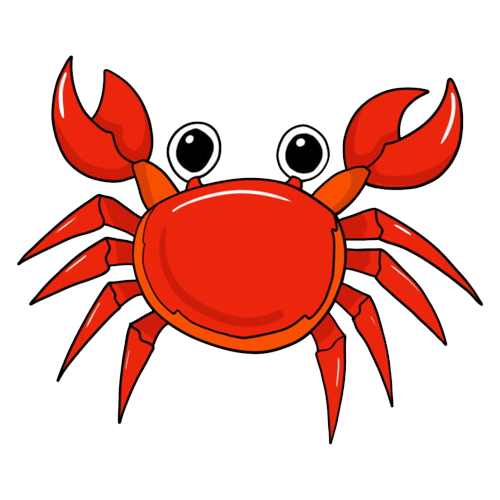
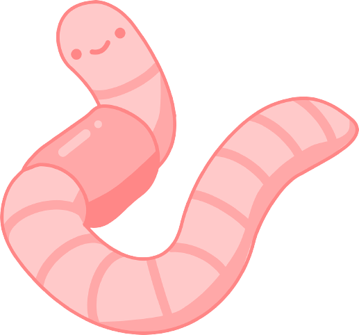
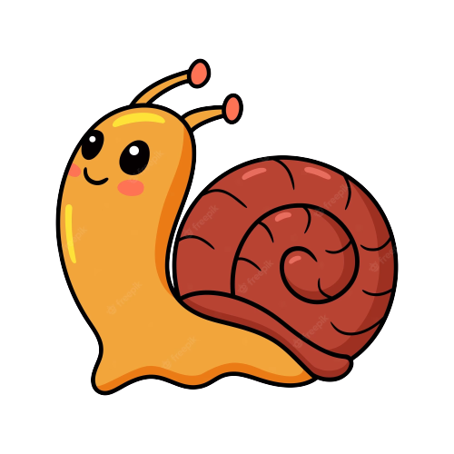
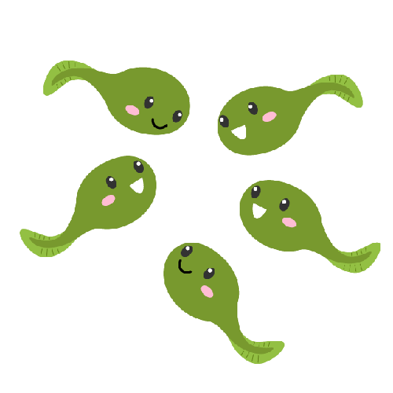
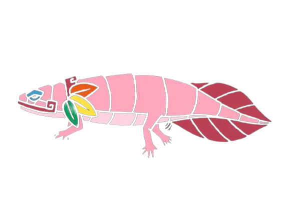
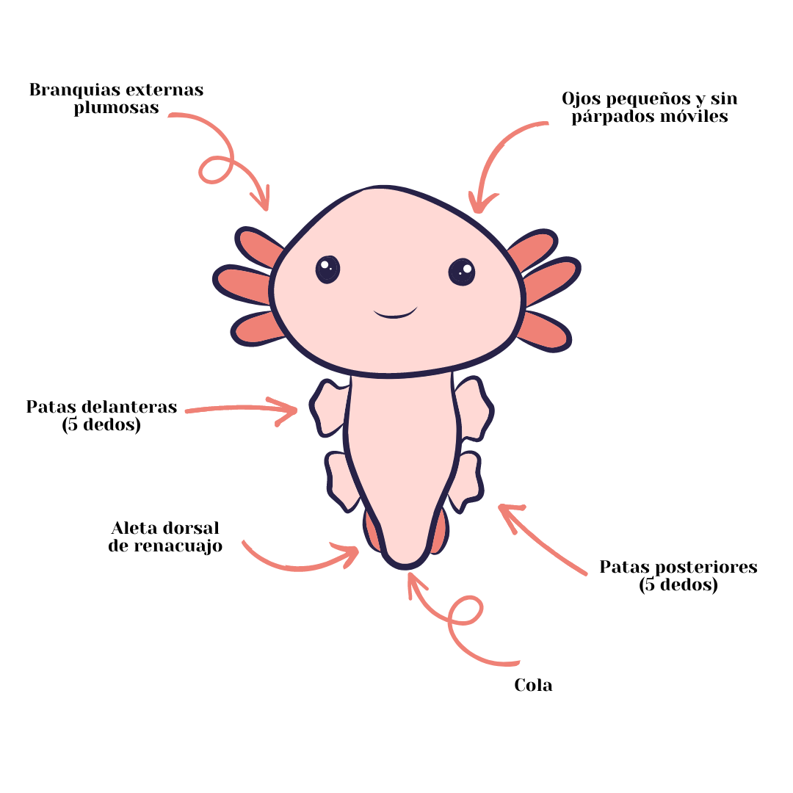

Axolotelandia
El axolote es un anfibio endémico de México y actual habitante del lago de Xochimilco. Este pequeño, de apariencia lustrosa, tierna y sonriente, es muy representativo de nuestro país, sin embargo, debido a que su hábitat está siendo destruido, el ajolote se encuentra en grave peligro de extinción.
¿Quién es?
- Nombre común: Axolote o ajolote
- Nombre científico: Ambystoma mexicanum
- Clase: Amphibia
- Dieta: Carnívoro
- Esperanza de vida en libertad: 10 - 15 años
- Tamaño: Hasta 30 cm
- Peso: 60 - 220 gr
- Estado de conservación: En peligro crítico
Caracteristicas de los axolotes
¿Qué comen los axolotes?
Es un anfibio carnívoro cuya alimentación se compone de:
- Crustaceos 
- Gusanos 
- Caracoles 
- Renacuajos 
Mitología
Según cuenta la leyenda, el ajolote es el dios azteca del fuego y el relámpago, Xolotl que se disfrazó de salamandra para evitar ser sacrificado. Pero estos anfibios mexicanos son lo suficientemente impresionantes por sí mismos, por su capacidad de regenerar extremidades perdidas y mantenerse “jóvenes” durante toda su vida.
Anatomía
Una rareza popular
Los ajolotes son un tema de investigación común para los biólogos, gracias a su capacidad para regenerar extremidades, corazones, médulas espinales e incluso partes de su cerebro perdidos o dañados, todo sin dejar cicatrices permanentes.

Dado que la cicatrización evita que el tejido se regenere, descubrir cómo y por qué los axolotl no dejan cicatrices podría desbloquear la capacidad del ser humano para regenerar tejido. Un estudio de abril de 2021, por ejemplo, descifró cómo se comunican las moléculas del ajolote para promover la regeneración.
A pesar de su omnipresente población cautiva, los ajolotes salvajes están en peligro crítico de extinción.
Los anfibios alguna vez habitaron los lagos de gran altitud alrededor de la Ciudad de México, pero la degradación del hábitat los ha limitado a solo unos pocos canales interiores en el área.